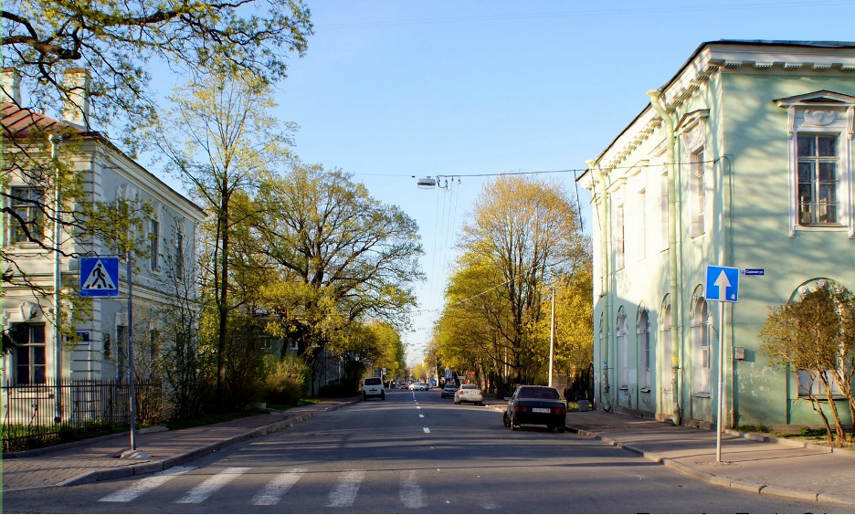

Путеводитель по городу Пушкин!
• Официальный сайт города - https://mo-gorodpushkin.ru/
• Дополнительные информационные ресурсы:
https://pushkin.spravker.ru/
https://pushkin.spb.ru/spravochnik/
https://www.tutu.ru/geo/rossiya/pushkin/article/guide//
https://www.tourister.ru/world/europe/russia/city/pushkin/tips/7965
• Общие сведения о городе:
Пу́шкин (до 1918 года — Ца́рское Село́, с 1918 по 1937 год — Де́тское Село́) — город в составе Пушкинского района города федерального значения Санкт-Петербурга и его внутригородское муниципальное образование, в 1936 году был передан в административное подчинение Ленинграда. Крупный туристический, научный, учебный и военно-промышленный центр. Включён в список памятников, охраняемых ЮНЕСКО, в составе объекта «Исторический центр Санкт-Петербурга и связанные с ним комплексы памятников».
Население — 108 187 чел. (2023).
Климат Пушкина умеренный и влажный, переходный от морского к континентальному. Продолжительность дня меняется от 5 часов 51 минуты в зимнее солнцестояние до 18 часов 50 минут в летнее солнцестояние. Лето короткое, умеренно тёплое, зима продолжительная, неустойчивая, с частыми оттепелями. Весна и осень носят затяжной характер. Положительные температуры воздуха преобладают с начала апреля по конец первой декады ноября. Самый холодный месяц — февраль. Среднегодовая сумма осадков — 590 мм.
Через город проходит железнодорожная линия Санкт-Петербург — Витебск, на его территории расположены железнодорожная станция Царское Село и остановочный пункт Детскосельская. Расстояние между Витебским вокзалом Санкт-Петербурга и Царским Селом составляет 22,6 километра.
Загородная императорская резиденция Царское Село была основана в 1710 году; город — с 1808 года. В городе находится музей-заповедник «Царское Село» — памятник градостроительного искусства и дворцово-парковый ансамбль XVIII — начала XX века. В состав заповедника входит Екатерининский парк с Екатерининским дворцом и другими сооружениями.
• Карта города:
• Историческая справка:
В начале 18 в. на месте города располагалась Сарская мыза (первое упоминание относится к 1702). Входила в состав Копорского уезда Ингерманландской губернии 1702–1707 гг. (1703–1707), Санкт-Петербургской (до 1710 Ингерманландская) губернии (1707–1719, 1744–1780), Санкт-Петербургской провинции Санкт-Петербургской губернии (1719–1744). В 1707–1710 гг. находилась во владении светлейшего князя А. Д. Меншикова, с 1710 – Екатерины Алексеевны (будущая императрица Екатерина I). После 1725 г. мыза получила название Царское Село. С 1727 г. владение царевны (с 1741 императрицы) Елизаветы Петровны. В 1741–1917 гг. официальная летняя резиденция российских монархов. В 1780–1808 гг. в составе Софийского уезда Санкт-Петербургской губернии.
С 1808 г. город Царское Село, в его состав включён бывший уездный г. София (основан в 1780). Уездный город Санкт-Петербургской (с 1914 Петроградской) губернии (1808–1923). В 1811–1843 гг. в городе действовал Царскосельский лицей (в 1843 переведён в Санкт-Петербург). В 1836–1838 гг. между Санкт-Петербургом и Павловском через Царское Село проложена Царскосельская железная дорога – первая в России железная дорога общественного пользования. В марте – августе 1917 г. под домашним арестом в своей резиденции в Царском Селе находился отрёкшийся от престола император Николай II с семьёй.
Советская власть установлена в октябре/ноябре 1917 г. В ходе выступления Керенского – Краснова 1917 г. на несколько дней занят войсками генерал-лейтенанта П. Н. Краснова. В 1918–1937 гг. назывался Детское Село. В 1923–1927 гг. в составе Троцкого уезда Петроградской (с 1924 Ленинградской) губернии. Районный центр Ленинградского округа Ленинградской области (1927–1930), в 1930–1936 гг. в составе Ленинградского Пригородного района Ленинградской области.
С 1936 г. в административном подчинении Ленинградскому городскому совету, при этом в городскую черту Ленинграда включён не был. В 1937 г. переименован в Пушкин в память 100-летия со дня смерти А. С. Пушкина. В 1938 г. в городе образован районный совет.
Во время Великой Отечественной войны, в ходе Ленинградской битвы 1941–1944 гг., оккупирован германскими войсками 18 сентября 1941 г. В ходе оккупации разрушены и разграблены многие дворцы и здания города, вырублены парки. Освобождён частями Красной Армии в ходе Красносельско-Ропшинской наступательной операции 24 января 1944 г.
С 1945 г. в городе непрерывно ведутся реставрационные работы. Со 2-й половины 20 в. развивается как один из ключевых центров туризма Ленинграда (Санкт-Петербурга) и его окрестностей. В 1959–1989 гг. в подчинении Пушкинскому районному совету находился г. Павловск. С 1996 г. включён в черту Санкт-Петербурга, его районный центр. С 1997 г. образует муниципальное (с 2021 внутригородское муниципальное) образование в составе Санкт-Петербурга.
• Фотогалерея:

Достопримечательности города:
Екатерининский дворец
Главная достопримечательность Пушкина и центр всего дворцово-паркового ансамбля — это Екатерининский дворец, служивший летней резиденцией для трех российских императриц. Возведен он был по приказу супруги Петра I Екатерины в 1717 году, поэтому именно её имя закрепилось в названии. |
 |
Екатерининский парк
Рядом с Екатерининским дворцом расположен по-императорски красивый парк, который, в свою очередь, делится на Старый сад и пейзажный Английский парк. В Старом саду расположен водный канал, внушительный скульптурный ансамбль и несколько павильонов, выполнявших самые разные функции. Здесь, помимо пруда и острова с павильоном, расположено несколько интереснейших архитектурных памятников: Адмиралтейство, Мраморный мост, Турецкая баня. |
 |
Знаменская церковь
Изначально храм был деревянным, но вскоре после постройки сгорел и в 1747 году его заменили каменным. Именно эта церковь, хотя и не без изменений, сохранилась до наших дней. Богослужения здесь посещали не только члены императорской семьи, но и местные жители, зачастую принадлежавшие к сословию зажиточных крестьян. |
 |
Павильон «Эрмитаж»
Возвели павильон в середине XVIII столетия, а за его окончательное оформление отвечал самый известный на то время российский архитектор Бартоломео Растрелли. Что снаружи, что внутри «Эрмитаж» представляет собой произведение искусства. Особенно поражает его интерьер, украшенный расписанными плафонами, лепниной, десюдепортами (декоративными композициями над дверями) и ещё десятком других декоративных элементов. |
 |
Адмиралтейство
Адмиралтейство — ансамбль из трех павильонов у воды, построенных в 1770-е годы по заказу императрицы Екатерины II. Здесь находились многочисленные лодки, которыми императрицы и придворные пользовались во время прогулок. Сопровождалось это действо красочной иллюминацией и музыкальным аккомпанементом, создаваемым оркестром на втором этаже Адмиралтейства. |
|
Гимн:
Здесь Пушкинской музы свеченье.
Живи здесь влюбляйся, пиши.
Здесь взлёт мирового значенья.
Загадочность русской души.
Припев:
Город Пушкин родной!
Мы гордимся тобой!
Ты духовная наша планета.
Твои парки, дворцы,
небосвод голубой.
Ты Отечеством
назван поэтом.
Как Пушкин свободный и страстный.
Заслуг даже не перечесть.
Ценой своей жизни прекрасной,
наш город отстаивал честь.
Припев:
Над городом Пушкиным ало.
Заря поднимает рассвет.
Торжественно ей с пьедистала.
Любуется Пушкин -поэт.
• Ссылки на видеоклипы, связанные с городом:
https://yandex.ru/video/preview/6430135666142029064?text=пушкин%20город%20видеоклип&path=yandex_search&parent-reqid=1699827853714994-4613650248718749783-balancer-l7leveler-kubr-yp-vla-11-BAL-6508&from_type=vast
https://yandex.ru/video/preview/6430135666142029064?text=пушкин%20город%20видеоклип&path=yandex_search&parent-reqid=1699827853714994-4613650248718749783-balancer-l7leveler-kubr-yp-vla-11-BAL-6508&from_type=vast
https://yandex.ru/video/preview/16201841528001665574?text=пушкин%20город%20видеоклип&path=yandex_search&parent-reqid=1699827853714994-4613650248718749783-balancer-l7leveler-kubr-yp-vla-11-BAL-6508&from_type=vast